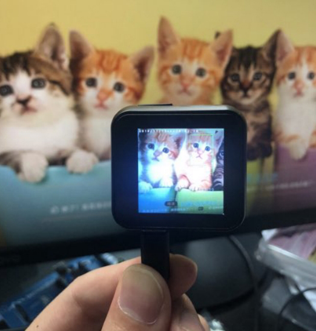

Introduction¶

1.Description¶
T-Watch K210 is a programmable watch kit based on K210, consisting of three base plates and screens.You can program T-Watch K210 via Arduino or MicroPython.
2.Hardware parameters¶
Main chip: K210
1.54-inch capacitive HD display: ST7789V
Touchpad chip: FT6236U
2 million pixel HD camera: OV2640
Three-axis accelerometer: BMA423
Microphone: MSM261S
Speaker: Max98357A
PMU power management: AXP202
RTC clock module: PCF8563
6-axis accelerometer: MPU6050
Support TF card reading and writing
Support the use of expandable modules
Power supply: Type-C USB/lithium battery
2.1 K210¶
{kind=link}
K210 Master：
With machine vision capabilities
With machine hearing ability
Better low-power vision processing speed and accuracy
Unique programmable IO array, making product design more flexible
3.3V/1.8V dual voltage support, no level conversion required, saving cost
Support firmware encryption, which is difficult to crack using ordinary methods
CPU: equipped with dual-core 64-bit high-performance low-power CPU based on RISC-V ISA
Low voltage, lower power consumption compared with systems with the same processing capacity
TSMC 28nm advanced manufacturing process, temperature range -40°C to 125°C, stable and reliable
Equipped with a convolutional artificial neural network hardware accelerator KPU, which can perform convolutional artificial neural network operations with high performance
Note
Kendryte K210 is a system-on-chip (SoC) that integrates machine vision and machine hearing capabilities. Use TSMC (TSMC) ultra-low power The 28-nanometer advanced manufacturing process, with dual-core 64-bit processor, has better performance, stability and reliability. The program strives to The development of zero gate biology can be deployed in the user’s products in the shortest time and transform the product artificial intelligence. Kendryte K210 is positioned as an SoC in the AI and IoT market, and is a very convenient MCU.
3.Pin definition¶

3.1 Display¶
K210 |
properties |
description |
|---|---|---|
GPIO36 |
SPI |
TFT_CS |
GPIO38 |
SPI |
TFT_DC |
GPIO37 |
SPI |
TFT_RST |
GPIO39 |
SPI |
TFT_WR |
GPIO17 |
BL |
TFT_BL |
3.2 Touch¶
K210 |
properties |
description |
|---|---|---|
GPIO31 |
I2C |
Touch_SDA |
GPIO30 |
I2C |
Touch_SCL |
3.3 TF Card¶
K210 |
properties |
description |
|---|---|---|
GPIO29 |
SPI |
TF_CS |
GPIO28 |
SPI |
TF_MOSI |
GPIO27 |
SPI |
TF_MISO |
GPIO26 |
SPI |
TF_SCLK |
3.4 Camera:OV2640¶
K210 |
properties |
description |
|---|---|---|
GPIO42 |
DVP |
DVP_RST |
GPIO43 |
DVP |
DVP_VYNC |
GPIO44 |
DVP |
DVP_PWDN |
GPIO45 |
DVP |
DVP_HYNC |
GPIO46 |
DVP |
DVP_XCLK |
GPIO47 |
DVP |
DVP_PCLK |
GPIO40 |
DVP |
DVP_SDA |
GPIO41 |
DVP |
DVP_SCL |
3.5 Microphone:MSM261S¶
K210 |
properties |
description |
|---|---|---|
GPIO18 |
I2S |
MIC_BCK |
GPIO19 |
I2S |
MIC_WS |
GPIO20 |
I2S |
MIC_DAT |
3.6 Interactive chip:ESP32¶
K210 |
properties |
description |
|---|---|---|
GPIO25 |
SPI-CS |
ESP32-IO05 |
GPIO28 |
SPI-MOSI |
ESP32-IO14 |
GPIO26 |
SPI-MISO |
ESP32-IO23 |
GPIO27 |
SPI-SCLK |
ESP32-IO18 |
3.7 Speaker:Max98357A¶
K210 |
properties |
description |
|---|---|---|
GPIO35 |
I2S |
MAX_BCK |
GPIO33 |
I2S |
MAX_WS |
GPIO34 |
I2S |
MAX_DAT |
3.8 PMU:AXP202¶
K210 |
properties |
description |
|---|---|---|
GPIO31 |
I2C |
Touch_SDA |
GPIO30 |
I2C |
Touch_SCL |
GPIO32 |
INT |
AXP_IRQ |
3.9 Six-axis accelerometer:MPU6050¶
K210 |
properties |
description |
|---|---|---|
GPIO31 |
I2C |
MPU_SDA |
GPIO30 |
I2C |
MPU_SCL |